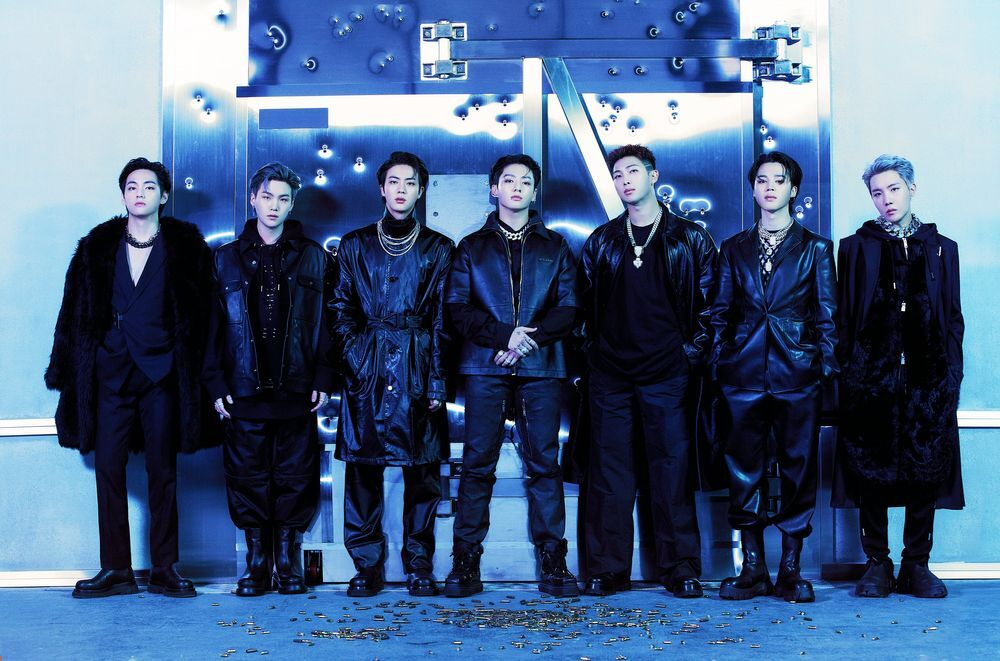

방탄소년단 BTS | 防彈少年團
2022. 12. 11 작성
2013년 6월 13일 싱글 앨범 《2 COOL 4 SKOOL》로 데뷔하여 그 해 가장 주목 받는 신인으로 부상하여 신인상을 받았으며, 2014년 상남자가 인기를 끌어 첫 음악방송 1위 후보에도 올랐었고 처음 참여했던 LA KCON 무대에서도 환호를 받아 미국에서 좋은 반응을 얻는 단초가 됐다. 2015년 '화양연화' 시리즈 활동으로 인기가 오르며 첫 음악방송 1위도 했고, 2016년 정규앨범 2집《WINGS》도 큰 인기를 끌어서 첫 대상을 수상했으며 2017년 'LOVE YOURSELF' 시리즈부터 빌보드 Hot 100에 진입했다. 2017년 BBMA 'Top Social Artist'상 수상을 시작으로 국내외에서 수 많은 기록들을 세우며 세계적으로 이름을 알리고 있고 그동안 K-POP이 잘 알려지지 않았던 아메리카, 유럽에서 많은 인기를 끌고 있다. 2020년 9월에는 'Dynamite'로 한국 가수로서는 최초로 빌보드 핫 100 1위를 달성했으며 멜론 차트 역사상 최장기간 1위를 달성하고, K-POP 최초로 그래미 어워드에서 노미네이트 및 단독 무대도 했고, 2020년 11월《BE》와 'Life Goes On'으로 빌보드 메인 차트인 Hot 100(싱글)과 200(앨범) 1위를 동시에 석권했으며 빌보드 62년 역사상 최초로 한국어 곡으로 빌보드 Hot 100 1위를 하는 등 수 많은 업적을 달성하고 있다.
흔히 말하는 '중소 기획사의 기적'의 대표주자이다. 해외를 염두에 두고 기획된 아이돌이 아닌데도 불구하고 2017년부터 유튜브나 빌보드, 아이튠즈, UK 차트, 오리콘 등 해외 인기 관련 기록들에서 K-POP 최대의 아웃풋을 내고 있다. 2018년에 '건국 이래 최초로 대중문화계 한 부문 세계 1위에 오른 한국인'이라는 기사가 나왔으며, 2019에는 미국, 영국을 포함한 서구권에서 먼저 '21세기 비틀즈'라는 찬사가 쏟아졌다. 2020년에 미국 시사주간지 타임에서 '올해의 연예인'에 선정되었고 국내, 해외를 통틀어 K-POP 관련 기록 경신에 선두를 달리고 있으며 세대가 지나면 비틀즈처럼 클래식의 반열로 올라갈 것이고 인생의 희망 아이콘이 되었다는 기사도 있다. 2021년, '해외 아티스트 최초'로 일본 오리콘 차트 세일즈 부문 토탈 랭킹에서 연간 1위를 차지했으며, '해외 그룹'으로는 최초이자 '해외 가수'로는 마이클 잭슨의 Thriller 이후 37년만에 오리콘 앨범 판매량 연간 1위를 차지했다. 국제음반산업협회에서 '전 세계 음악 시장 매출 1위가 방탄소년단'이라는 글로벌 뮤직 보고서를 발표했다.
2019년 10월 포브스에서 GDP 5.5조 원 규모를 창출하는 방탄소년단의 경제효과에 대해 주목하는 기사가 보도되었다. 또한 'Dynamite'로 빌보드 핫 100 1위를 함으로써 대한민국에 가져다주는 경제 효과는 최소 1조 7천억 원이라고 밝혀졌으며, 여러 언론에서 방탄소년단을 '걸어다니는 대기업'이라고 표현하기도 한다. 2021년 기준 현대경제연구원 보고서에 따르면 BTS가 매년 한국에 50억 달러(약 5조 7천억원)의 경제적 이익을 가져다 주고 있다고 밝혔으며, NPR은 BTS가 한국 문화에 대한 학습과 기부 등에도 파급 효과를 이끌어내고 있다고 전달했다.